library(tidyverse)
library(glue)Guía visual de tipos de variables y geoms en ggplot2
Objetivo
Este documento genera desde cero una guía visual inspirada en los temas cubiertos por las hojas de referencia sobre:
- tipos de variables para visualización,
- geoms básicos,
- geoms avanzados.
No replica el diseño exacto ni el texto original; construye una versión propia mediante código en R + ggplot2.
1. Tipos de variables
Ejemplo de datos
example_df <- tibble(
country = c("Peru", "Germany", "United States"),
income_group = factor(c("middle_income", "high_income", "high_income")),
approved = c(TRUE, FALSE, TRUE),
level = ordered(c("first", "second", "third"), levels = c("first", "second", "third")),
score = c(11.71, 14.20, 9.85),
n = c(8L, 7L, 10L),
date = as.Date(c("1972-03-12", "1982-04-18", "1999-10-22")),
datetime = as.POSIXct(c("2012-02-09 00:00:00", "2014-07-18 13:30:00", "2016-11-02 08:15:00"), tz = "UTC")
)
glimpse(example_df)Rows: 3
Columns: 8
$ country <chr> "Peru", "Germany", "United States"
$ income_group <fct> middle_income, high_income, high_income
$ approved <lgl> TRUE, FALSE, TRUE
$ level <ord> first, second, third
$ score <dbl> 11.71, 14.20, 9.85
$ n <int> 8, 7, 10
$ date <date> 1972-03-12, 1982-04-18, 1999-10-22
$ datetime <dttm> 2012-02-09 00:00:00, 2014-07-18 13:30:00, 2016-11-02 08:1…Tabla resumen
variable_types <- tibble(
tipo_r = c("<chr>", "<fct>", "<lgl>", "<ord>", "<dbl>", "<int>", "<date>", "<dttm>"),
clase = c("character", "factor", "logical", "ordered", "double", "integer", "date", "datetime"),
categoria = c("Discreta", "Discreta", "Discreta", "Discreta", "Continua", "Continua", "Fecha/Tiempo", "Fecha/Tiempo"),
ejemplo = c(
'"Germany"',
'high_income',
'TRUE',
'first',
'11.71',
'8L',
'1972-03-12',
'2012-02-09 00:00:00'
),
convertir = c(
"as.character()",
"as.factor()",
"as.logical()",
"as.ordered()",
"as.double()",
"as.integer()",
"as.Date()",
"as.POSIXct()"
)
)
knitr::kable(variable_types, caption = "Resumen propio de tipos de variables útiles en visualización")| tipo_r | clase | categoria | ejemplo | convertir |
|---|---|---|---|---|
| character | Discreta | “Germany” | as.character() | |
| factor | Discreta | high_income | as.factor() | |
| logical | Discreta | TRUE | as.logical() | |
| ordered | Discreta | first | as.ordered() | |
| double | Continua | 11.71 | as.double() | |
| integer | Continua | 8L | as.integer() | |
| date | Fecha/Tiempo | 1972-03-12 | as.Date() | |
| datetime | Fecha/Tiempo | 2012-02-09 00:00:00 | as.POSIXct() |
Mapa visual de categorías
var_plot_df <- variable_types %>%
mutate(
y = forcats::fct_rev(clase),
x = case_when(
categoria == "Discreta" ~ 1,
categoria == "Continua" ~ 2,
TRUE ~ 3
)
)
ggplot(var_plot_df, aes(x = x, y = y, label = tipo_r)) +
geom_point(size = 5) +
geom_text(nudge_y = 0.25, size = 3.5) +
scale_x_continuous(
breaks = c(1, 2, 3),
labels = c("Discreta", "Continua", "Fecha / Tiempo")
) +
labs(
title = "Clasificación visual de tipos de variables",
x = NULL,
y = NULL
) +
theme_minimal(base_size = 12)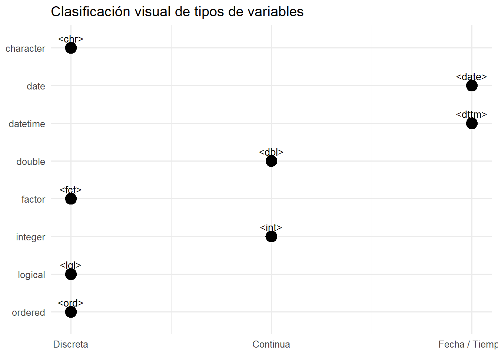
2. Geoms básicos
Matriz conceptual de estéticas
basic_geoms <- tribble(
~geom, ~x, ~y, ~fill, ~alpha, ~color, ~width, ~size,
"geom_histogram", "must", "no", "can", "can", "can", "no", "can",
"geom_col", "must", "must", "can", "can", "can", "can", "can",
"geom_bar", "must", "no", "can", "can", "can", "can", "can",
"geom_line", "must", "must", "no", "can", "can", "no", "can",
"geom_area", "must", "must", "can", "can", "can", "no", "can",
"geom_point", "must", "must", "no", "can", "can", "no", "can",
"geom_boxplot", "must", "must", "can", "can", "can", "can", "can"
)
basic_long <- basic_geoms %>%
pivot_longer(-geom, names_to = "aes", values_to = "status")
ggplot(basic_long, aes(x = aes, y = forcats::fct_rev(geom), shape = status)) +
geom_point(size = 4) +
scale_shape_manual(values = c(must = 16, can = 15, no = 17)) +
labs(
title = "Geoms básicos y sus estéticas",
subtitle = "Círculo = obligatoria, cuadrado = opcional, triángulo = no aplicable",
x = "Aesthetic",
y = NULL,
shape = "Estado"
) +
theme_minimal(base_size = 12)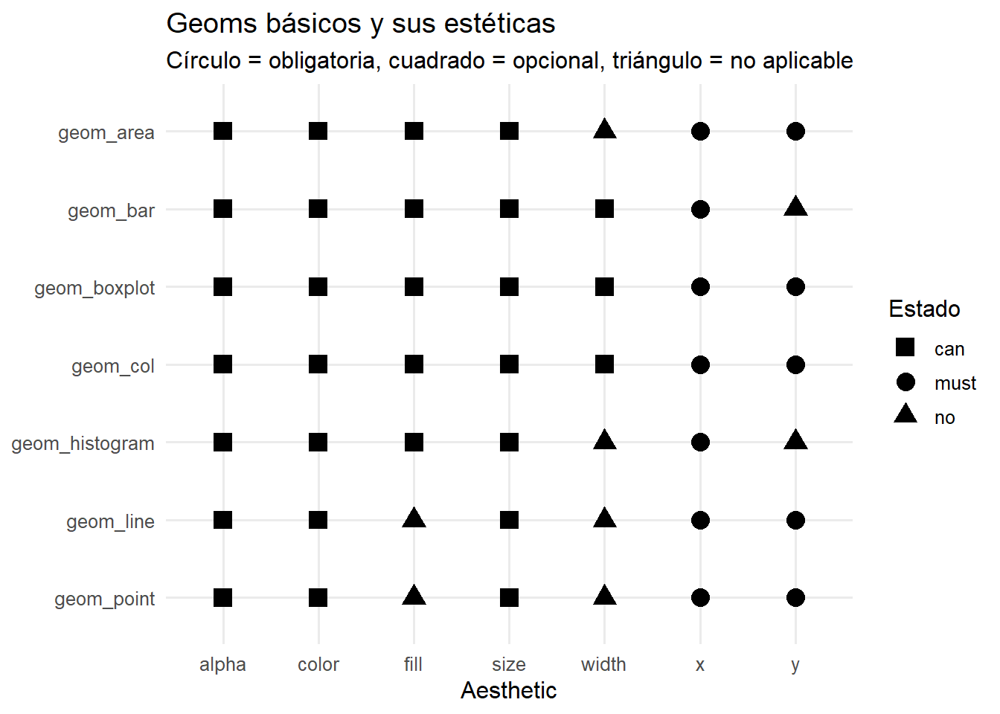
Ejemplos reales con mtcars
p1 <- ggplot(mtcars, aes(x = factor(cyl))) +
geom_bar() +
labs(title = "geom_bar()", x = "cyl", y = "count")
p2 <- ggplot(mtcars, aes(x = wt, y = mpg)) +
geom_point() +
labs(title = "geom_point()", x = "wt", y = "mpg")
p3 <- ggplot(mtcars, aes(x = wt, y = mpg)) +
geom_line() +
labs(title = "geom_line()", x = "wt", y = "mpg")
p4 <- ggplot(mtcars, aes(x = factor(cyl), y = mpg)) +
geom_boxplot() +
labs(title = "geom_boxplot()", x = "cyl", y = "mpg")
p1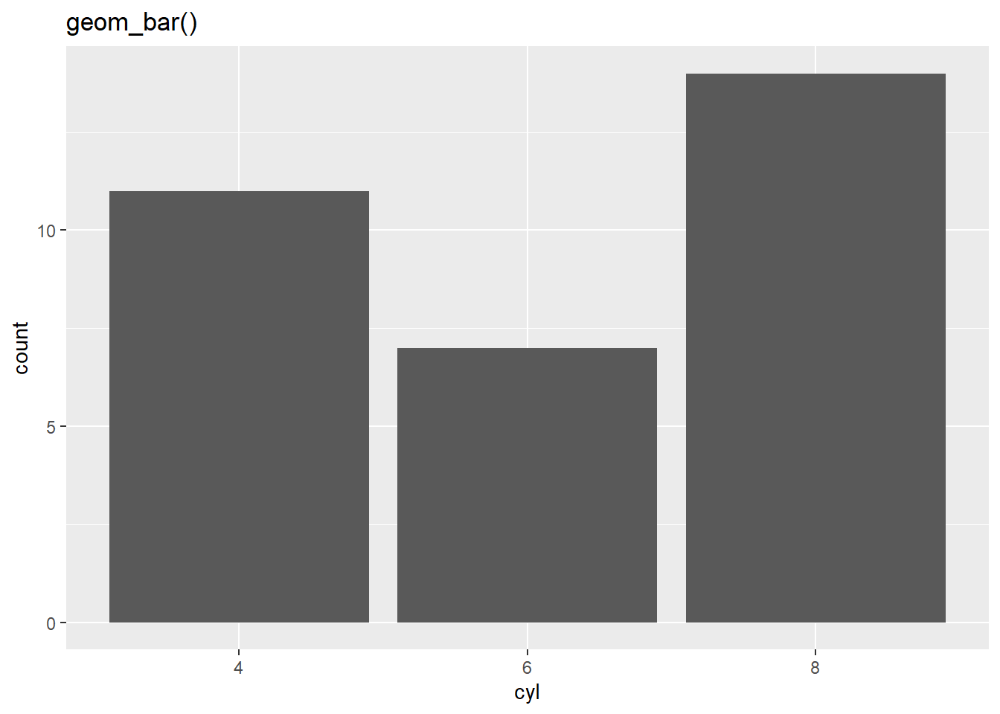
p2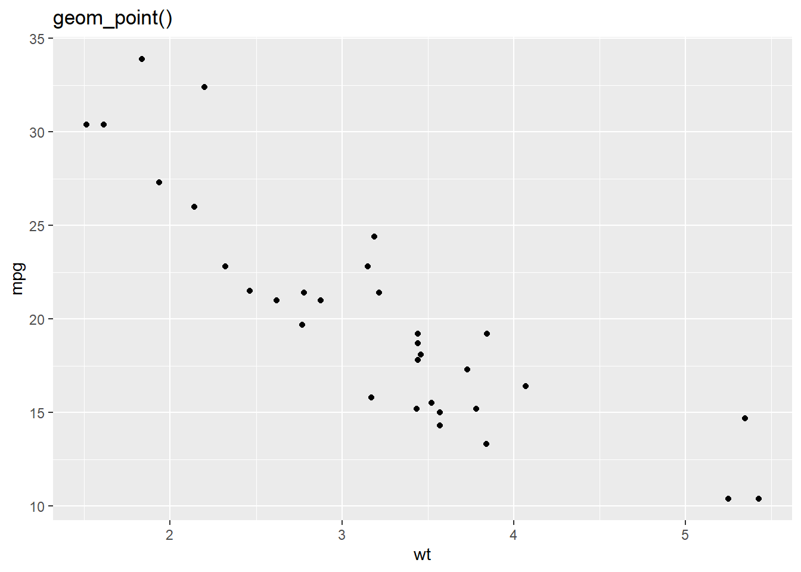
p3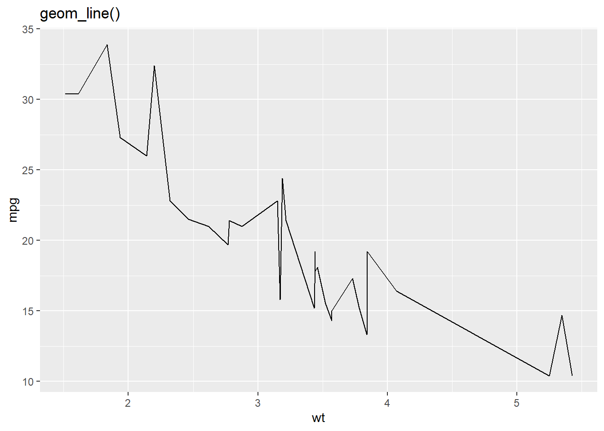
p4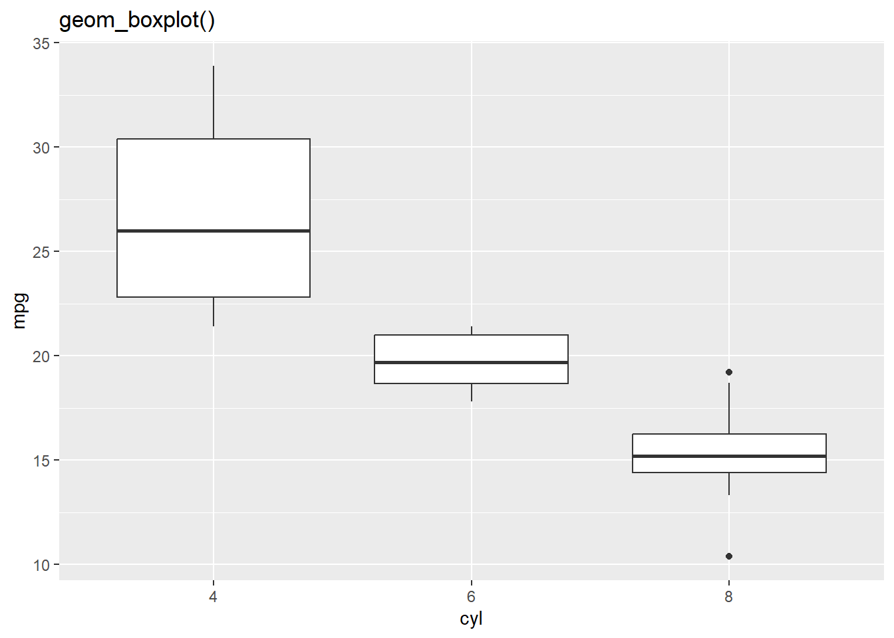
3. Geoms avanzados
Matriz conceptual de estéticas
advanced_geoms <- tribble(
~geom, ~x, ~y, ~ymin, ~ymax, ~fill, ~color, ~alpha, ~size, ~width, ~label,
"geom_text", "must", "must", "no", "no", "no", "can", "no", "can", "no", "must",
"geom_label", "must", "must", "no", "no", "can", "can", "no", "can", "no", "must",
"geom_jitter", "must", "must", "no", "no", "no", "can", "can", "can", "no", "no",
"geom_ribbon", "must", "no", "must", "must", "can", "can", "can", "no", "no", "no",
"geom_errorbar", "must", "no", "must", "must", "no", "can", "no", "can", "can", "no",
"geom_linerange", "must", "no", "must", "must", "no", "can", "no", "can", "no", "no",
"geom_pointrange", "must", "must", "must", "must", "no", "can", "no", "can", "no", "no"
)
advanced_long <- advanced_geoms %>%
pivot_longer(-geom, names_to = "aes", values_to = "status")
ggplot(advanced_long, aes(x = aes, y = forcats::fct_rev(geom), shape = status)) +
geom_point(size = 4) +
scale_shape_manual(values = c(must = 16, can = 15, no = 17)) +
labs(
title = "Geoms avanzados y sus estéticas",
subtitle = "Círculo = obligatoria, cuadrado = opcional, triángulo = no aplicable",
x = "Aesthetic",
y = NULL,
shape = "Estado"
) +
theme_minimal(base_size = 12)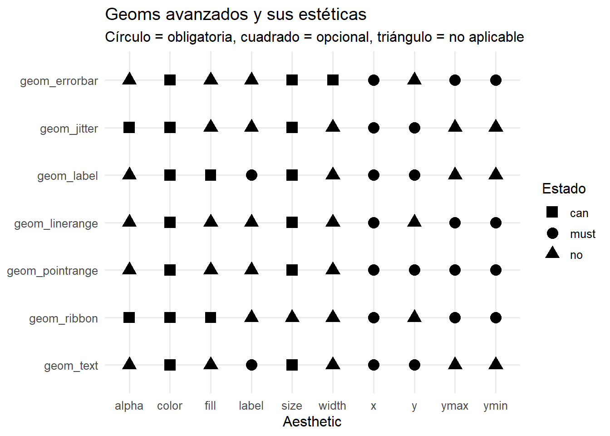
Ejemplos reales
set.seed(123)
example_labels <- mtcars %>%
rownames_to_column("car") %>%
slice_max(mpg, n = 5)
ggplot(example_labels, aes(x = wt, y = mpg, label = car)) +
geom_text() +
labs(title = "geom_text()", x = "wt", y = "mpg")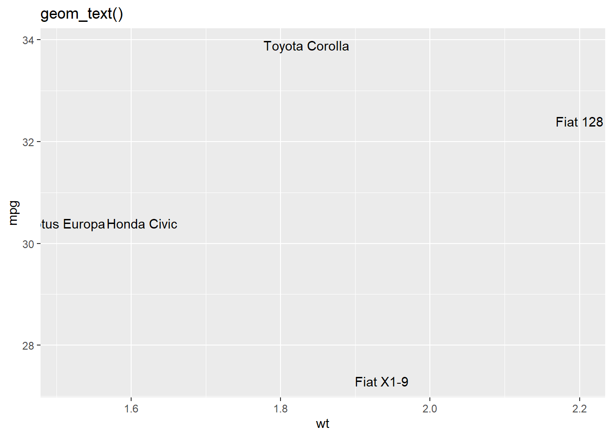
ggplot(mtcars, aes(x = factor(cyl), y = mpg)) +
geom_jitter(width = 0.15, height = 0) +
labs(title = "geom_jitter()", x = "cyl", y = "mpg")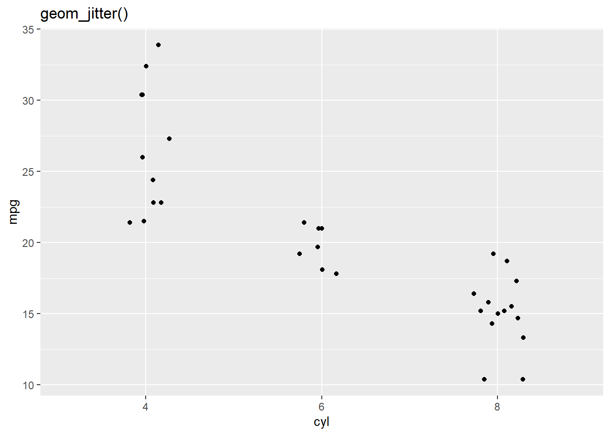
summary_df <- mtcars %>%
group_by(cyl) %>%
summarise(
mean_mpg = mean(mpg),
sd_mpg = sd(mpg),
ymin = mean_mpg - sd_mpg,
ymax = mean_mpg + sd_mpg,
.groups = "drop"
)
ggplot(summary_df, aes(x = factor(cyl), y = mean_mpg, ymin = ymin, ymax = ymax)) +
geom_pointrange() +
labs(title = "geom_pointrange()", x = "cyl", y = "mpg promedio")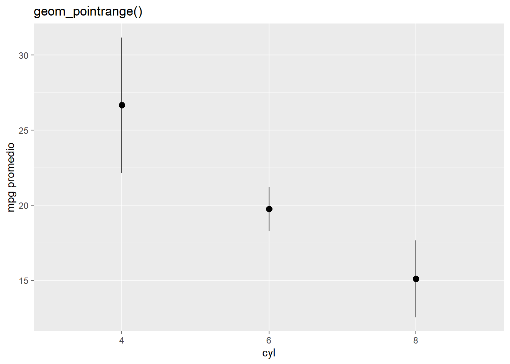
series_df <- tibble(
x = 1:10,
y = c(3, 4, 5, 6, 5, 7, 8, 7, 9, 10)
) %>%
mutate(
ymin = y - runif(n(), 0.4, 1.0),
ymax = y + runif(n(), 0.4, 1.0)
)
ggplot(series_df, aes(x = x)) +
geom_ribbon(aes(ymin = ymin, ymax = ymax), alpha = 0.2) +
geom_line(aes(y = y)) +
labs(title = "geom_ribbon()", x = "x", y = "y")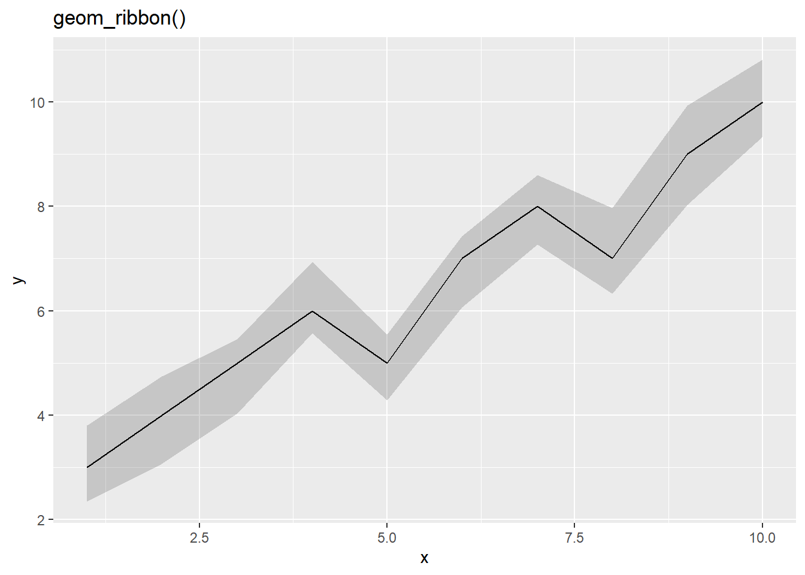
4. Cómo extender esta guía
Puedes ampliar este documento agregando:
facet_wrap()para comparar variables,geom_smooth()para tendencias,scale_*_*()para personalizar ejes,theme_*()para estilos visuales,- tablas con tipos de variables recomendados por geom.
5. Sesión reproducible
sessionInfo()